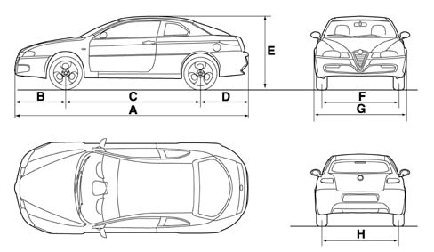

VEHICLE DIMENSIONS
- Path
- Technical Data > PROJECT DESCRIPTION AND SPECIFICATIONS > VEHICLE DIMENSIONS
- Kind
- technical data / specifications
- Applies to
- all engines; all production periods
- Interactive page
- https://sloeber94.github.io/elrnDB-aGt/en/#/125000018
Applies to: all engines; all production periods
The height refers to an unladen vehicle fitted with standard issue tyres. Minimum variations in measurements with optional tyres fitted.
Luggage compartment capacity (VDA standards): 320 dm3
1.8 T.SPARK | 2.0 JTS | 3.2 V6 | 1.9-JTD 16v | |
|---|---|---|---|---|
A (mm) | 4489 | 4489 | 4489 | 4489 |
B (mm) | 967 | 967 | 967 | 967 |
C (mm) | 2596 | 2596 | 2596 | 2596 |
D (mm) | 926 | 926 | 926 | 926 |
E (mm) | 1362 | 1362 | 1355 | 1366 |
F (mm) | 1524 | 1524 | 1524 | 1524 |
G (mm) | 1763 | 1763 | 1763 | 1763 |
H (mm) | 1510 | 1510 | 1510 | 1510 |
